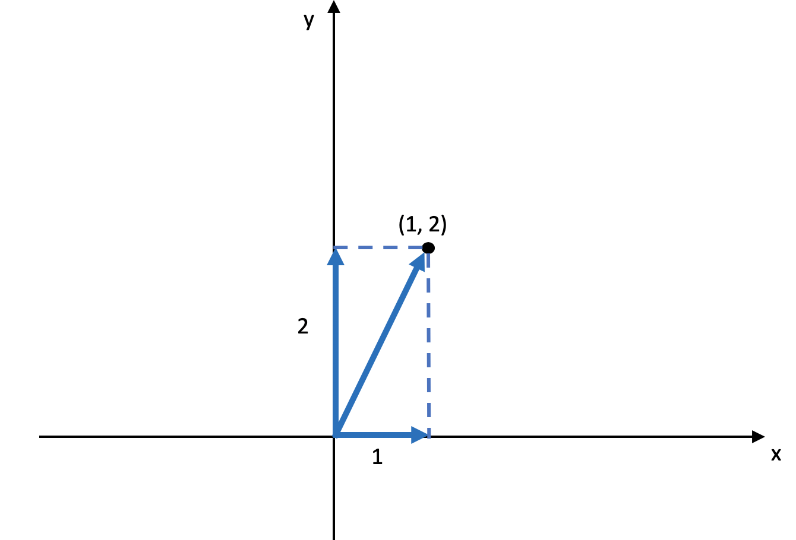

- 01 二进制：不了解计算机的源头，你学什么编程.md.html
- 02 余数：原来取余操作本身就是个哈希函数.md.html
- 03 迭代法：不用编程语言的自带函数，你会如何计算平方根？.md.html
- 04 数学归纳法：如何用数学归纳提升代码的运行效率？.md.html
- 05 递归（上）：泛化数学归纳，如何将复杂问题简单化？.md.html
- 06 递归（下）：分而治之，从归并排序到MapReduce.md.html
- 07 排列：如何让计算机学会“田忌赛马”？.md.html
- 08 组合：如何让计算机安排世界杯的赛程？.md.html
- 09 动态规划（上）：如何实现基于编辑距离的查询推荐？.md.html
- 10 动态规划（下）：如何求得状态转移方程并进行编程实现？.md.html
- 11 树的深度优先搜索（上）：如何才能高效率地查字典？.md.html
- 12 树的深度优先搜索（下）：如何才能高效率地查字典？.md.html
- 13 树的广度优先搜索（上）：人际关系的六度理论是真的吗？.md.html
- 14 树的广度优先搜索（下）：为什么双向广度优先搜索的效率更高？.md.html
- 15 从树到图：如何让计算机学会看地图？.md.html
- 16 时间和空间复杂度（上）：优化性能是否只是“纸上谈兵”？.md.html
- 17 时间和空间复杂度（下）：如何使用六个法则进行复杂度分析？.md.html
- 18 总结课：数据结构、编程语句和基础算法体现了哪些数学思想？.md.html
- 19 概率和统计：编程为什么需要概率和统计？.md.html
- 20 概率基础（上）：一篇文章帮你理解随机变量、概率分布和期望值.md.html
- 21 概率基础（下）：联合概率、条件概率和贝叶斯法则，这些概率公式究竟能做什么？.md.html
- 22 朴素贝叶斯：如何让计算机学会自动分类？.md.html
- 23 文本分类：如何区分特定类型的新闻？.md.html
- 24 语言模型：如何使用链式法则和马尔科夫假设简化概率模型？.md.html
- 25 马尔科夫模型：从PageRank到语音识别，背后是什么模型在支撑？.md.html
- 26 信息熵：如何通过几个问题，测出你对应的武侠人物？.md.html
- 27 决策树：信息增益、增益比率和基尼指数的运用.md.html
- 28 熵、信息增益和卡方：如何寻找关键特征？.md.html
- 29 归一化和标准化：各种特征如何综合才是最合理的？.md.html
- 30 统计意义（上）：如何通过显著性检验，判断你的A_B测试结果是不是巧合？.md.html
- 31 统计意义（下）：如何通过显著性检验，判断你的A_B测试结果是不是巧合？.md.html
- 32 概率统计篇答疑和总结：为什么会有欠拟合和过拟合？.md.html
- 33 线性代数：线性代数到底都讲了些什么？.md.html
- 34 向量空间模型：如何让计算机理解现实事物之间的关系？.md.html
- 35 文本检索：如何让计算机处理自然语言？.md.html
- 36 文本聚类：如何过滤冗余的新闻？.md.html
- 37 矩阵（上）：如何使用矩阵操作进行PageRank计算？.md.html
- 38 矩阵（下）：如何使用矩阵操作进行协同过滤推荐？.md.html
- 39 线性回归（上）：如何使用高斯消元求解线性方程组？.md.html
- 40 线性回归（中）：如何使用最小二乘法进行直线拟合？.md.html
- 41 线性回归（下）：如何使用最小二乘法进行效果验证？.md.html
- 42 PCA主成分分析（上）：如何利用协方差矩阵来降维？.md.html
- 43 PCA主成分分析（下）：为什么要计算协方差矩阵的特征值和特征向量？.md.html
- 44 奇异值分解：如何挖掘潜在的语义关系？.md.html
- 45 线性代数篇答疑和总结：矩阵乘法的几何意义是什么？.md.html
- 46 缓存系统：如何通过哈希表和队列实现高效访问？.md.html
- 47 搜索引擎（上）：如何通过倒排索引和向量空间模型，打造一个简单的搜索引擎？.md.html
- 48 搜索引擎（下）：如何通过查询的分类，让电商平台的搜索结果更相关？.md.html
- 49 推荐系统（上）：如何实现基于相似度的协同过滤？.md.html
- 50 推荐系统（下）：如何通过SVD分析用户和物品的矩阵？.md.html
- 51 综合应用篇答疑和总结：如何进行个性化用户画像的设计？.md.html
- 导读：程序员应该怎么学数学？.md.html
- 开篇词 作为程序员，为什么你应该学好数学？.md.html
- 数学专栏课外加餐（一） 我们为什么需要反码和补码？.md.html
- 数学专栏课外加餐（三）：程序员需要读哪些数学书？.md.html
- 数学专栏课外加餐（二） 位操作的三个应用实例.md.html
- 结束语 从数学到编程，本身就是一个很长的链条.md.html
- 捐赠
45 线性代数篇答疑和总结：矩阵乘法的几何意义是什么？
你好，我是黄申。今天是线性代数的答疑和总结。
在这个模块中，我们讲了不少向量、矩阵、线性方程相关的内容。看到大家在留言区的问题，今天我重点说说矩阵乘法的几何意义，以及为什么SVD中\(X’X\)的特征向量组成了\(V\)矩阵，而\(XX’\)的特征向量组成了\(U\)矩阵。最后，我会对整个线性代数的模块做一个总结。
矩阵乘法的几何意义
首先，我们来说说矩阵乘法所代表的几何意义。
在阐述PCA主成分分析的时候，我们聊过为什么这个方法要研究协方差矩阵的特征值和特征向量。其中，我提到对某个向量左乘一个矩阵，实际上是对这个向量进行了一次变换。某个矩阵的特征向量表示了这个矩阵在空间中的变换方向，这些方向都是正交或者趋于正交的，而特征值表示每个方向上伸缩的比例。今天，我会继续深入这个话题，结合实例，给出更详细地解释。
多维的向量空间很难理解，所以我们还是从最简单的二维空间开始。首先，我们需要明白什么是二维空间中的正交向量。正交向量的定义非常简单，只要两个向量的点乘结果为0，那么它们就是正交的。在酉矩阵之中，矩阵和矩阵的转置相乘为单位矩阵，只有向量自己点乘自己值为1，而不同向量之间点乘值为0，所以不同的向量之间是正交的。
理解了正交向量之后，我们来定义一个二维空间，这个空间的横坐标为\(x\)，纵坐标为\(y\)，空间中的一个点坐标为\((1,2)\)，对于这个点，我们可以把从原点到它的直线投影到\(x\)轴和\(y\)轴，这个直线在\(x\)轴上投影的长度为1，在y轴上投影的长度为2。我使用下图来表示。

对于这个点，我们使用一个矩阵\(X\_1\)左乘这个点的坐标，你可以看看会发生什么。
我们把结果转成坐标系里的点，它的坐标是\((3, 4)\)，把从原点到\((1,2)\)的直线，和从原点到\((3,4)\)的直线进行比较，你会发现直线发生了旋转，而且长度也发生了变化，这就是矩阵左乘所对应的几何意义。我们还可以对这个矩阵\(X\_1\)分析一下，看看它到底表示了什么含义，以及为什么它会导致直线的旋转和长度发生变化。
之前我讲过，要看一个矩阵的特征，需要分析它的特征向量和特征值。由于矩阵\(X\_1\)是一个对角矩阵，所以特征值很容易求解，分别是3和2。而对应的特征向量是\(\[1, 0\]\)和\(\[0, 1\]\)。在二维坐标中，坐标[1, 0]实际上表示的是\(x\)轴的方向，而[0, 1]实际上表示的是\(y\)轴的方向。特征值3对应特征向量[1, 0]就表明在\(x\)轴方向拉伸为原来的3倍，特征值2对应特征向量[0, 1]就表明在\(y\)轴方向拉伸2倍。所以，矩阵\(X\_1\)的左乘，就表示把原有向量在\(x\)轴上拉伸为原来的3倍，而在\(y\)轴上拉伸为原来的2倍。我用下面这张图来展示。
我们还可以从另一个角度来验证这点，把从原点到\((3, 4)\)的直线进行分解，我们会发现这个直线在\(x\)轴上投影的长度为3，为原来的3倍，而在\(y\)轴上投影的长度为4，为原来的2倍。
当然，矩阵的特征向量不一定是\(x\)轴和\(y\)轴，它们可以是二维空间中任何相互正交的向量。下面，我们再来看一个稍微复杂一点的例子。这次我们从两个正交的向量开始。
我使用下面这张图展示了这两个向量在空间的方向。
然后我用这两个向量构建一个矩阵\(V\)。
之所以使用这样一个例子，是因为\(V\)是一个酉矩阵，也就是说\(VV’=I\)，所以我们可以使用它，外加一个特征值组成的对角矩阵\(Σ\)，来构建另一个用于测试的矩阵\(X\_2\)。我在SVD的那一讲，介绍过对称方阵可以进行特征值分解，所以我们可以通过\(V\)和\(Σ\)，获得一个对称方阵\(X\_2=VΣV’\)。
我们假设两个特征值分别是0.5和2，所以有：
根据我们之间的解释，如果让这个矩阵\(X\_2\)左乘任何一个向量，就是让向量沿\(\[\\frac{1}{\\sqrt{2}} \\frac{1}{\\sqrt{2}}\]\)方向压缩一半，而在\(\[\\frac{1}{\\sqrt{2}} \\frac{-1}{\\sqrt{2}}\]\)方向增加两倍。为了验证这一点，我们让\(X\_2\)左乘向量\((1, 2)\)，获得新向量：

把这个新的坐标\((-0.25, 1.75)\)和原坐标\((1,2)\)都放到二维坐标系中，并让它们分别在\(\[\\frac{1}{\\sqrt{2}} \\frac{1}{\\sqrt{2}}\]\)和\(\[\\frac{1}{\\sqrt{2}} \\frac{-1}{\\sqrt{2}}\]\)这两个方向进行投影，然后比较一下投影的长度，你就会发现伸缩的变化了。我使用下面这张图来帮你理解。
弄清楚了矩阵左乘向量的几何意义，那么矩阵左乘矩阵的几何意义也就不难理解了。假设我们让矩阵\(X\)左乘矩阵\(Y\)，那么可以把右矩阵\(Y\)看作一堆列向量的集合，而左乘矩阵\(X\)就是对每个\(Y\)中的列向量进行变换。另外，如果二维空间理解了，那么三维、四维直到\(n\)维空间就可以以此类推了。
SVD分解中的\(U\)和\(V\)矩阵
在讲解SVD奇异值分解的时候，我们解释了\(X’X\)的特征向量组成了SVD中的\(V\)矩阵，而\(XX’\)的特征向量组成了SVD中的\(U\)矩阵。不过，我们还没有证明这两点。今天我来说说如何证明它们。首先，我们来看看\(V\)矩阵的证明。
\(X=UΣV’\)- \(X’=VΣ’U’\)- \(X’X=(VΣ’U)(UΣV’)=VΣ’(U’U)Σ’V’=VΣ^2V’)\)
其中，\((UΣV’)‘=VΣ’U’\)的证明，我们在最小二乘法的讲解过程中证明过。另外，\(U\)是酉矩阵，所以\(U’U=I\)。\(Σ\)是对角矩阵，所以\(Σ’Σ=Σ2\)，而且\(Σ2\)仍然是对角矩阵。
由于\(Σ2\)是对角矩阵，所以通过\(X’X=VΣ2V’\)，我们可以看出\(V\)中的向量就是\(X’X\)的特征向量，而特征值是\(Σ2\)对角线上的值。
同理，我们也可以证明\(U\)中的向量就是\(XX’\)的特征向量。
\(X=UΣV’\)- \(X’=VΣ’U’\)- \(XX’=(UΣV’)(VΣ’U’)=UΣ(V’V)Σ’U’=UΣ^2U’)\)
从这个证明的过程，我们也发现了，XX’或者X’X特征值矩阵等于奇异值矩阵的平方，也就是说我们可以通过求出X’X特征值的平方根来求奇异值。
总结
回答完两个问题之后，我来总结一下线性代数这个模块。
线性代数最基本的概念包括了向量、矩阵以及对应的操作。向量表示了一组数的概念，非常适合表示一个对象的多维特征，因此被广泛的运用在信息检索和机器学习的领域中。而矩阵又包含了多个向量，所以适合表示多个数据对象的集合。同时，矩阵也可以用于表达二维关系，例如网页的邻接矩阵，用户对物品的喜好程度，关键词在文档中的tf-idf等等。
由于向量和矩阵的特性，我们可以把它们运用在很多算法和模型之中。向量空间模型定义了向量之间的距离或者余弦夹角，我们可以利用这些指标来衡量数据对象之间的相似程度，并把这种相似程度用于定义查询和文档之间的相关性，或者是文档聚类时的归属关系。矩阵的运算体现了对多个向量同时进行的操作，比如最常见的左乘，就可以用在计算PageRank值，协同过滤中的用户或者物品相似度等等。
当然，矩阵的运用还不只计算数据对象之间的关系。最小二乘法的实现、PCA主成分的分析、SVD奇异值的分解也可以基于矩阵的运算。这些都可以帮助我们发现不同维度特征之间的关系，并利用这些关系找到哪些特征更为重要，选择或者创建更为重要的特征。
有的时候，线性代数涉及的公式和推导比较繁琐。在思考的过程中，我们可以把矩阵的操作简化为向量之间的操作，而把向量之间的操作简化为多个变量之间的运算。另外，我们可以多结合实际的案例，结合几何空间、动手推算，甚至可以编程实现某些关键的模块，这些都有利于理解和记忆。
思考题
我想听你说说，学习完了编程领域中常用的线性代数知识，你有哪些收获和心得？
欢迎留言和我分享，也欢迎你在留言区写下今天的学习笔记。你可以点击“请朋友读”，把今天的内容分享给你的好友，和他一起精进。
© 2019 - 2023 Liangliang Lee. Powered by gin and hexo-theme-book.